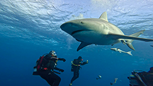

Dangerous Species
Let's uncover the most dangerous shark species in the world. How to handle encounters, where to expect encounters, and safety precautions to take before entering their territory.

Great White Sharks
General Facts
- 1. Average lifespan of Great White shark is anywhere between 30-70 years
- 2. Female Great Whites are larger than males and can weigh up to 4,500 lbs.
- 3. Length of shark at birth is 4 feet, full grown adult sharks can be 21 ft long!

Habitat information
Great White sharks are unique because they have been found in shallow waters and in open ocean.
Sharks shift habitats with age, generally remaining in shallower waters as juveniles.
Great White sharks typically are found in temperate and subtropical seas throughout the world in water
temperatures
ranging from 50°F to 80°F.
Tiger Sharks

General Facts
- 1. Tiger sharks have vertical stripes or spots running along their body making them distinguishable from other sharks.
- 2. Their diet consists of invertebrates, seabirds, sea turtles, stingrays, and even smaller sharks.
- 3. Tiger sharks have been known to be as large as 2,000 pounds and at least 18 ft in length.
Habitat information
Tiger sharks are known to stay within coral reefs where there is an abundant food source. Tiger sharks, like Great White, enjoy the temperate and tropical waters around the world. Tiger sharks have been seen from shallow shore waters to as deep as 1,150 ft!
Bull Sharks

General Facts
- 1. Bull sharks have a lifespan between 12 to 16 years.
- 2. Bull sharks have special glands and functions within their kidney that helps their bodies retain salt while in freshwater.
- 3. Bull sharks are believed to have the highest Testosterone levels in the animal kingdom.
An adult male human has 2.5 - 9.5 ng/ml where Bull Sharks have been tested to reach 358 ng/ml!
Habitat information
Bull sharks can be found in coastal waters throughout the world. Specifically in the United States, Bull Sharks are seen mainly in
the East Coast and in the Gulf of Mexico. Unlike other sharks, Bull sharks can survive in freshwater for long periods of time. Bull sharks
have been seen in the Mississippi and Amazon Rivers!

General Facts
- 1. Bull sharks have a lifespan between 12 to 16 years.
- 2. Bull sharks have special glands and functions within their kidney that helps their bodies retain salt while in freshwater.
- 3. Bull sharks are believed to have the highest Testosterone levels in the animal kingdom. An adult male human has 2.5 - 9.5 ng/ml where Bull Sharks have been tested to reach 358 ng/ml!
Habitat information
Bull sharks can be found in coastal waters throughout the world. Specifically in the United States, Bull Sharks are seen mainly in the East Coast and in the Gulf of Mexico. Unlike other sharks, Bull sharks can survive in freshwater for long periods of time. Bull sharks have been seen in the Mississippi and Amazon Rivers!
If Encountered!
What to do if encountered or injured